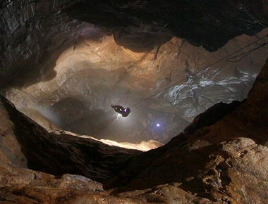
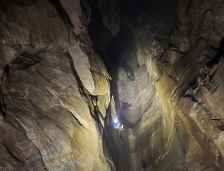

|
So...
I would like to offer you some special places - pearls, I would say.
On the official website of the park you will find lots of tips on what to do. Winnats Pass
A local legend is that the pass is haunted by a young couple Alan and Clara who eloped in 1758, only to be robbed and murdered by miners as they headed through Winnats Pass, on their way to Peak Forest Chapel. The miners hid their bodies in a mine shaft where they were discovered 10 years later. The Cannibals of GradbachWatch the story. Eyam PlagueThe history of the plague in the village began in 1665 when a flea-infested bundle of cloth arrived from London for Alexander Hadfield, the local tailor. Within a week his assistant George Viccars, noticing the bundle was damp, had opened it up. Before long he was dead and more began dying in the household soon after. As the disease spread, the villagers turned for leadership to their rector, the Reverend William Mompesson, and the ejected Puritan minister Thomas Stanley. They introduced a number of precautions to slow the spread of the illness from May 1666. The measures included the arrangement that families were to bury their own dead and relocation of church services to the natural amphitheatre of Cucklett Delph, allowing villagers to separate themselves and so reducing the risk of infection. Perhaps the best-known decision was to quarantine the entire village to prevent further spread of the disease. Merchants from surrounding villages sent supplies that they would leave on marked rocks; the villagers then made holes there which they would fill with vinegar to disinfect the money left as payment. The plague ran its course over 14 months and one account states that it killed at least 260 villagers, with only 83 surviving out of a population of 350. That figure has been challenged on a number of occasions, with alternative figures of 430 survivors from a population of around 800 being given. The church in Eyam has a record of 273 individuals who were victims of the plague. Survival among those affected appeared random, as many who remained alive had close contact with those who died but never caught the disease. For example, Elizabeth Hancock was uninfected despite burying six children and her husband in eight days. The graves are known as the Riley graves after the farm where they lived. The unofficial village gravedigger, Marshall Howe, also survived, despite handling many infected bodies. Or maybe you like challenges?Titan is a natural cavern near Castleton in the Derbyshire Peak District, and is the deepest shaft of any known cave in Britain, at 141.5 metres (464 ft). To visit it, you will need waterproof clothing, safety equipment and knowledge of how to use it safely.

Kinder ScoutKinder Scout is a moorland plateau and national nature reserve in the Dark Peak of the Derbyshire Peak District in England. Part of the moor, at 636 metres (2,087 ft) above sea level, is the highest point in the Peak District, the highest point in Derbyshire, and the highest point in the East Midlands. In excellent weather conditions the city of Manchester and the Greater Manchester conurbation can be seen, as well as Winter Hill near Bolton, and the mountains of Snowdonia in North Wales. Mam TorMam Tor is a 517 m (1,696 ft) hill near Castleton in the High Peak of Derbyshire, England. Its name means "mother hill", so called because frequent landslips on its eastern face have resulted in a multitude of "mini-hills" beneath it. These landslips, which are caused by unstable lower layers of shale, also give the hill its alternative name of Shivering Mountain. |

|